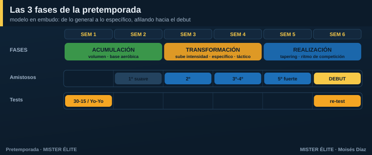

Módulo 01 · Fundamentos de la pretemporada
Qué es —y qué NO es— la pretemporada
La pretemporada no es "machacar". Es el periodo en el que construyes tres cosas a la vez, sin que un mal resultado te cueste puntos: una base física que protegerá al equipo todo el año, una identidad de juego y la cohesión del grupo.
El error histórico es medir la pretemporada por el sufrimiento ("hemos reventado a los chicos"). La evidencia dice lo contrario: lo que protege durante la temporada no es haber sufrido, sino haber acumulado carga de forma progresiva. Tim Gabbett lo llamó la paradoja entrenamiento-lesión: los equipos que llegan a la competición con poca carga acumulada se lesionan más, no menos. El objetivo no es cansar; es construir un depósito de forma.
Tres objetivos, no uno: - Físico — base aeróbica, tolerancia a la carga, exposición progresiva a la alta velocidad. Llegar con "motor". - Táctico — instalar el modelo de juego: principios → subprincipios → automatismos. - Humano — integrar fichajes, fijar roles, crear lenguaje común y hábitos de concentración.
Los 5 mitos que este curso desmonta
| Mito | Realidad |
|---|---|
| "Cuanto más volumen y más sufrimiento, mejor" | Los picos bruscos de carga (ACWR > 1,5) disparan las lesiones. |
| "Lo físico primero, lo táctico cuando estemos en forma" | Se entrenan a la vez: el físico se mete dentro del balón. |
| "La pretemporada va bien si ganamos los amistosos" | El resultado del amistoso es un mal indicador. Son un medio, no un fin. |
| "Hay que empezar a tope desde el primer día" | El primer día se mide y se construye base, no se revienta. |
| "Sin GPS no se puede controlar la carga" | Con RPE, papel y wellness controlas el 90 % de lo que importa. |
Las tres fases: el modelo en embudo
Toda pretemporada bien planificada va de lo general a lo específico, y termina afilando hacia el debut. Son tres fases encadenadas:

- Acumulación (≈ primeras 2 semanas) — volumen alto, base aeróbica genérica, fuerza general. Construyes el depósito. Intensidad controlada.
- Transformación (≈ semanas 3-4) — sube la intensidad, aparece el trabajo específico y los amistosos. La carga se parece cada vez más a la competición.
- Realización / puesta a punto (≈ últimas 1-2 semanas) — tapering: bajas el volumen manteniendo la intensidad. El microciclo ya es idéntico al de competición. Llegas fresco al debut.
Duración total orientativa: profesional/semipro 4-6 semanas; amateur y base 6-8 semanas (al tener menos sesiones por semana, necesitan más semanas para acumular el mismo volumen). Más de 6-8 microciclos suele ser excesivo.
Microciclo, mesociclo y el lenguaje MD
- Microciclo = la semana de entrenamiento (la unidad con la que vas a trabajar todo el curso).
- Mesociclo = un bloque de varias semanas con un objetivo (p. ej., el bloque de "acumulación").
- MD (Match Day) = se planifica respecto al partido.
MD-4,MD-3…MD-1,MD,MD+1. Cada día tiene un perfil de carga distinto según lo lejos o cerca que esté del partido. Es el idioma que usan los cuerpos técnicos profesionales (Buchheit) y el que usaremos en los planes.
Tres modelos de periodización (y cuál usar)
No hay un único modo correcto de planificar. Conviene conocer los tres grandes marcos:
A) Periodización tradicional (modelo de cargas). Bloques separados: primero volumen, después intensidad. Ventaja: simple y ordenada. Crítica (Seirul·lo): nace del atletismo y separa lo físico de lo táctico, algo poco coherente con un deporte de balón e incertidumbre.
B) Periodización táctica (Vítor Frade). El eje es el modelo de juego; lo físico se subordina a la táctica. La semana ("morfociclo") repite siempre la misma forma; cambian los contenidos. Ventaja: todo se entrena jugando. Coste: exige método y es difícil de cuantificar.
C) Microciclo estructurado (Seirul·lo). Enfoque integral: el jugador como estructura compleja (físico, técnico, táctico, psicológico, socioafectivo). Distribuye la carga según los días respecto al partido. Ventaja: individualiza. Coste: requiere staff amplio.
Recomendación del curso: no te cases con una etiqueta. Quédate con lo mejor de cada una: el balón como medio principal (B y C), la carga repartida con cabeza según el día (A y C) y una forma de semana estable que el equipo reconozca (B). Es exactamente lo que hacen los planes de este curso.
¿Va bien mi pretemporada? Indicadores
No mires el marcador del amistoso. Mira esto:
- Tests físicos repetidos al inicio y al final: 30-15 IFT o Yo-Yo IR1 (motor aeróbico intermitente), CMJ (salto, frescura neuromuscular), sprint 10-30 m. Si mejoran, vas bien.
- Carga acumulada progresiva sin picos peligrosos (lo verás en el Módulo 2 con el ACWR).
- Comportamientos del modelo: ¿el equipo reconoce los patrones sin que tengas que gritarlos? Eso son automatismos instalados.
- Wellness y sensaciones: sueño, fatiga, dolor muscular y ánimo estables o en mejora.
En una frase
La pretemporada perfecta construye un depósito de forma sin picos, instala el modelo de juego y llega fresca y afilada al debut. Ni se sufre por sufrir, ni se mide por los amistosos.
Siguiente módulo: qué es exactamente la carga física y cómo controlarla sin tecnología.